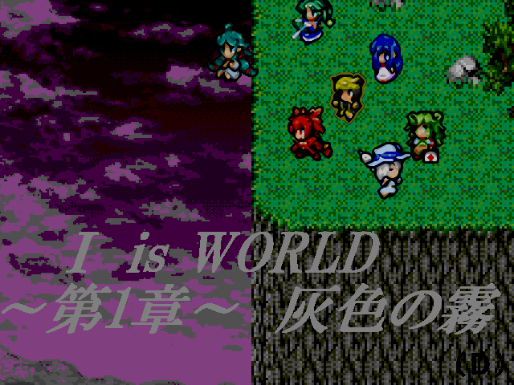

 |
|
| 作者：（Ｒ）ＤＵ | |
| ツクール：MV | |
| ジャンル：デフォ戦やるゲー | |
| 配信/投稿：可/可 | |
| keyword：魔法具現化 Ⅰ魔法 具現化オールスター | |
| 投票：投票はこちら | |
| 作者コメント： その日、全ての世界は終わりを迎えた…。 世界の異変を探るべく、人間が消えた世界でⅠ魔法達が奮闘するやるゲＲＰＧ 初めてのＭＶという事で仕様を理解するのに大分戸惑っています。 | |
| 管理人コメント： Ⅱ魔法やⅢ魔法のみなさんは果たして……。 |
|
| 更新履歴：12/31登録→01/24遅刻提出→01/27本体更新 | |
| ダウンロード / 感想掲示板 | |
| 前の作品 / 次の作品 / TOPへ戻る | |